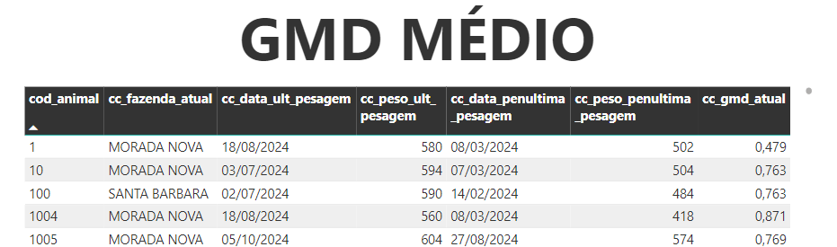

GMD MÉDIO
Avalie o ganho médio de peso dos animais do rebanho nas últimas 2 pesagens.
Explicação do Cálculo

Explicacao calculo
Fórmula Matemática:
$$
\frac{(\text{cc_peso_ult_pesagem - cc_peso_penultima_pesagem})}{\text{(cc_data_ult_pesagem - cc_data_penultima_pesagem)}}
$$
Vídeo Explicativo
Ver explicação
Fórmulas DAX
A seguir estão detalhadas todas as fórmulas DAX utilizadas.
Cálculo final
GMD Médio = AVERAGE('CalcInfosAnimais'[cc_gmd_atual])
Etapas do cálculo
1. Data penúltima pesagem
cc_data_penultima_pesagem =
VAR COD_CL = 'CalcInfosAnimais'[cod_animal]
VAR DATA_ULT_PESAGEM = 'CalcInfosAnimais'[cc_data_ult_pesagem]
RETURN
CALCULATE(
MAX('CalcAtividadeAnimai'[data]),
FILTER(
'CalcAtividadeAnimai',
'CalcAtividadeAnimai'[cod_animal] = COD_CL &&
ISNUMBER('CalcAtividadeAnimai'[peso]) &&
'CalcAtividadeAnimai'[data] < DATA_ULT_PESAGEM))
cc_peso_penultima_pesagem =
VAR COD_CL = 'CalcInfosAnimais'[cod_animal]
VAR DATA_PENULT_PESAGEM_CL = 'CalcInfosAnimais'[cc_data_penultima_pesagem]
RETURN
CALCULATE(
MAX('CalcAtividadeAnimai'[peso]),
FILTER(
'CalcAtividadeAnimai',
'CalcAtividadeAnimai'[cod_animal] = COD_CL &&
ISNUMBER('CalcAtividadeAnimai'[peso]) &&
'CalcAtividadeAnimai'[data] = DATA_PENULT_PESAGEM_CL))
cc_data_ult_pesagem =
VAR COD_CL = 'CalcInfosAnimais'[cod_animal]
RETURN
CALCULATE(
MAX('CalcAtividadeAnimai'[data]),
FILTER(
'CalcAtividadeAnimai',
'CalcAtividadeAnimai'[cod_animal] = COD_CL
&& ISNUMBER('CalcAtividadeAnimai'[peso]))
)
cc_peso_ult_pesagem =
VAR COD_CL = 'CalcInfosAnimais'[cod_animal]
VAR DATA_ULT_PESAGEM_CL = 'CalcInfosAnimais'[cc_data_ult_pesagem]
RETURN
CALCULATE(
MAX('CalcAtividadeAnimai'[peso]),
FILTER(
'CalcAtividadeAnimai',
'CalcAtividadeAnimai'[cod_animal] = COD_CL &&
ISNUMBER('CalcAtividadeAnimai'[peso]) &&
'CalcAtividadeAnimai'[data] = DATA_ULT_PESAGEM_CL))
cc_gmd_atual =
SWITCH(
TRUE()
,OR(ISBLANK('CalcInfosAnimais'[cc_peso_ult_pesagem]), ISBLANK('CalcInfosAnimais'[cc_peso_penultima_pesagem])), BLANK()
,DIVIDE(([cc_peso_ult_pesagem] - [cc_peso_penultima_pesagem]), ([cc_data_ult_pesagem] - [cc_data_penultima_pesagem]), BLANK()))